Exercise 2: Designing the Phoneword Application
Duration
10 minutes
Lab Goals
The primary goal of this lab will be to create a new iOS Storyboard application and design the user-interface that allows the user to enter a phone number. When you are finished, the user-interface will look like:

The user interface will be a single Storyboard view with several child elements:
| Type |
Property |
Value |
Label
|
|
| "Enter a Phoneword:" |
| System Bold 17 |
|
Text Field
|
|
| PhoneNumberText |
| "1-855-XAMARIN" |
|
Button
|
|
| TranslateButton |
| "Translate" |
|
Button
|
|
|
During this exercise, you will become familiar with the basics of the iOS designer built into Xamarin Studio.
Exercise Overview
Try to use the above screen shot as a design example, create the UI by dragging and dropping in the designer and then set the properties for each element according to the above table.
If you need a little more help to complete the exercise, there are step-by-step instructions provided below. Also, there is a completed version of the lab that you can use if you run out of time, so don't be afraid to experiment and play.
Tip: If you are doing this exercise live in a session, make sure to make good use of the instructor, they are online to answer any questions you have!
Steps
Create the Phoneword Project
- Launch Xamarin Studio - just double-click on the Xamarin Studio icon in your Applications folder on OS X. Xamarin Studio will open up and look something like the following:

- Click
New Solution... on the Xamarin Studio Welcome screen and expand the
iOS node in the New Solution dialog.
- Select
iPhone in the Tree on the left, and
Single View Application in the list of templates on the right as shown in the following screen:
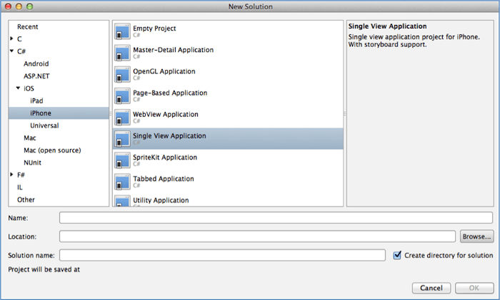
- Name the project and solution
Phoneword and place it into an accessible location, for example your desktop.
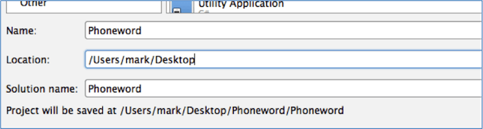
- Click
OK to create the project.
- Build the application to make sure it compiles successfully.
Working with the iOS Designer
- Double-click on the MainStoryboard.storyboard file to open the iOS designer.
Note: if XCode is launched when you double-click the storyboard, then you are very likely running an older version of Xamarin Studio that did not enable the iOS designer by default. Please make sure you are running a minimum of Xamarin Studio 5.0 through the
Xamarin Studio > About Xamarin Studio menu.
- The iOS Designer window will appear and display a single screen. It has several components to it which are highlighted below:
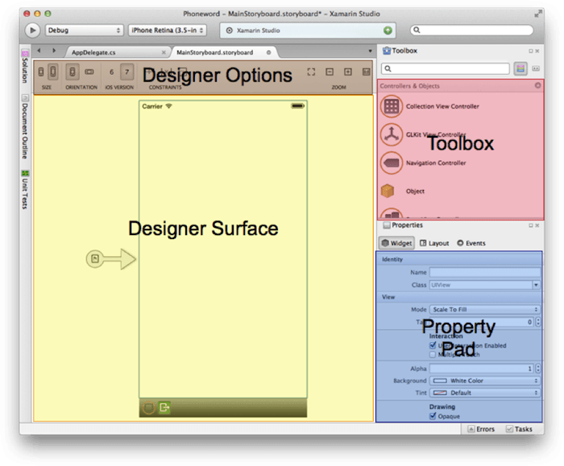
The designer works much like any other designer you have probably used in the past. To add controls to the view - just identify the control in the toolbox and drag and drop it into the designer. For example, find the Label element in the toolbox, click (hold) and drag it over onto the phone screen and then release the mouse button to add it to the view. Guidelines (shown in the screenshot below) will be drawn in the designer surface to more easily allow you to center and align content.
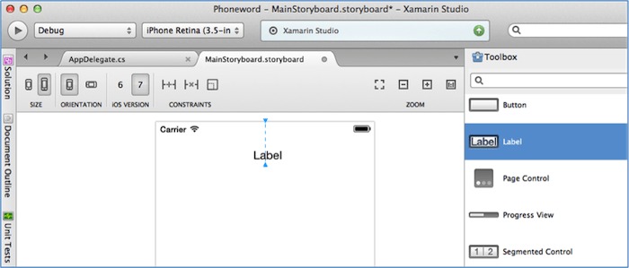
Here are a few notes about the designer
- You can cancel a drag by pressing ESC while you are dragging an element.
- You can select a single element by clicking on it - this changes the property pad to display properties relevant to that selected item.
- There is also a
Document Outline window available (
View > Pads > Document Outline) which displays all of the elements for the screen in a tree structure - this is often easier to use for selection purposes.
- When a single item is selected, there are two modes the designer can be in; drag/resize mode and pin/spacing mode. You can easily distinguish between these modes through the adornments drawn on top of the element:
- To switch between these modes, just single click on the element. Each time you click, the mode will be changed. The mode we want to work in for this session is always Drag/Resize - this allows you to move and resize the element around on the screen. If you find yourself in pin/spacing mode, just click on the element to switch back.
- You can multiple elements by either drag-selecting multiple shapes in a screen, or by holding the Command (⌘) key and clicking on each control in turn.
Note: in the current build, changing properties or events will only affect the first selected shape. This multi-select feature is primarily for layout purposes at the moment
- When multiple items are selected, you will get a layout bar, which allows you to align elements on the top/left/right/bottom/center. A future exercise will go through this feature in more depth; as it is more complex than it looks, for now you can just "eyeball" the alignment it by dragging the elements around with the designer.
Create the Phoneword Design
We will be creating the following design - you can compare the following image against your design at any time to make sure you are on track.
- In the Toolbox, scroll down and locate the
Label control.
- Drag a
Label into the Designer layout area, resizing and positioning the Label to be positioned at the top of the screen, sized to the guideline edges.
- Double-click the
Label and change the text to "Enter a Phoneword:" it should look similar to the following when complete:
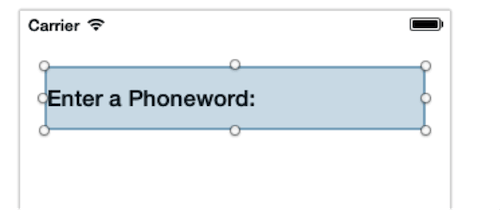
- With the
Label selected, switch to the Properties Pad and change the font to be System Bold 17 pt. Just click on the (T) symbol to the right to get a drop-down selection.
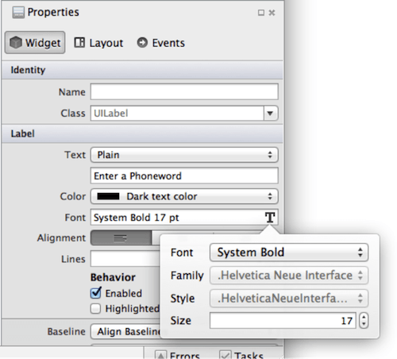
- Drag a
Text Field under the Label.
- Use the Drag Control Handles to resize and position the
Text Field as necessary so that it is aligned underneath the label and stretched to the width of the screen. Again, there will be guidelines when you move the two elements close together.
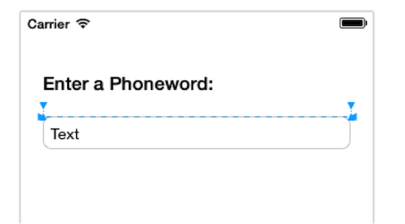
- With the Text Field selected, switch to the Properties Pad and make the following changes to the
Name and Text properties as shown below, you can also refer to the property change list at the start of this document.
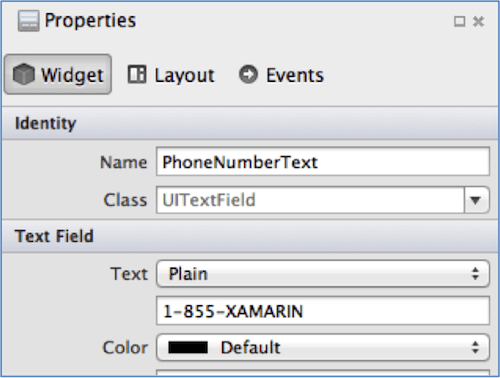
- Locate the
Button control in the Toolbox and drag it under the Text Field, resizing and positioning it as necessary.
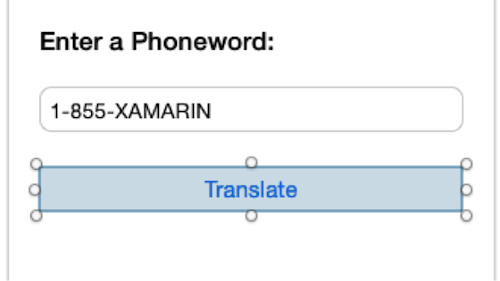
- In the Property Pad, make the following changes:
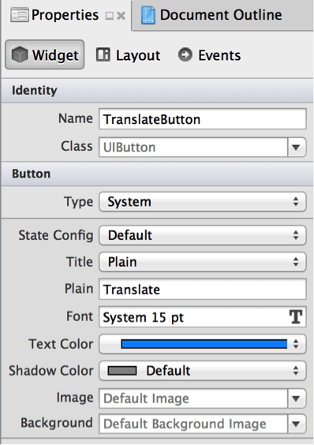
- Drag another
Button under the Translate button, resizing and positioning it as necessary.
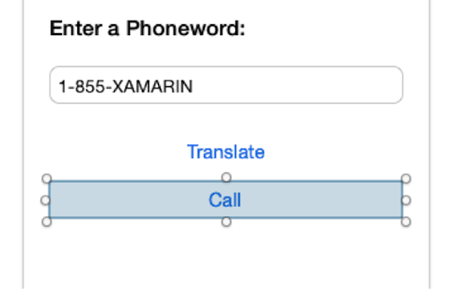
Note: another way to accomplish this is to use Copy (Command+C) and Paste (Command+V) to create a duplicate copy the Translate Button and then just reposition it and change the property values.
- In the Property Pad, make the following changes to the
Name and Title properties:
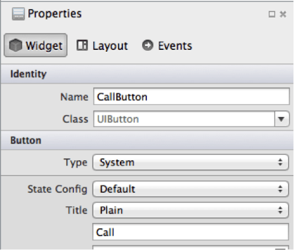
- File > Save All to save the changes.
Test the Design in the Simulator
- In Xamarin Studio, choose Debug and iPhone Retina (4.0 inch) and click the Play button:
- The iOS Simulator should show up after several seconds, and if everything has gone well our app will display. Verify that it looks correct based on the original design.
- Press the Stop button in Xamarin Studio to halt the iOS Simulator:
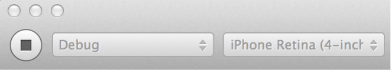
Summary
In this lab, we have built the user interface for our first real iOS application with Xamarin Studio. You have seen how the designer can be used to add new controls to a screen, reposition them and then edit their properties. You have also seen how to launch the application in the iOS simulator.
If you have extra time, try exploring some of the other controls in the Toolbox to see what comes with iOS.